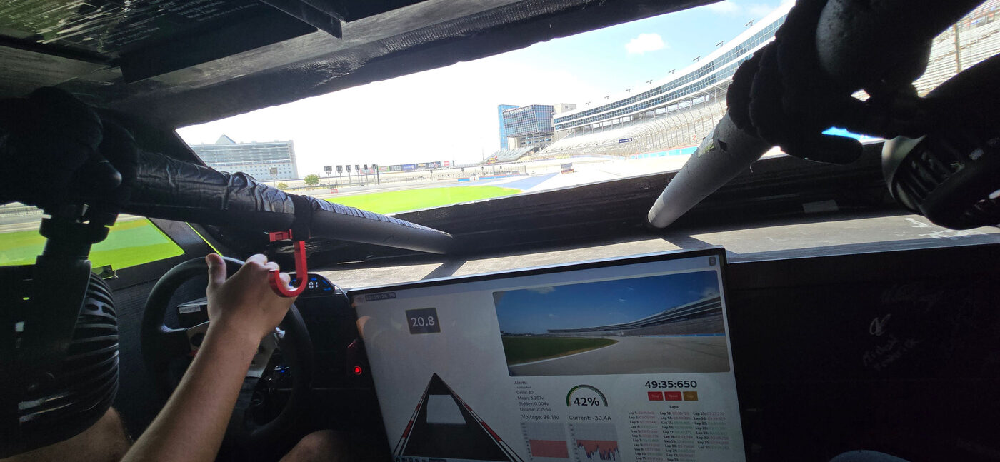

Alset Solar Cybersedan
Florida Atlantic University · Advanced Experimental Vehicles · 2024

Everything on that screen is the team's own software.
The Florida Atlantic Solar Owls built a four-passenger solar car and took it to the 31st
annual Solar Car Challenge at Texas Motor Speedway — four days of racing on a mile-and-a-half
oval, after three days of scrutineering. It finished second in the Cruiser Division, and
took the Lockheed Martin Award for engineering excellence and the Renda Carter Award for the team
video and scrapbook. It was the first car from a Florida high school or university to compete in
that division.
Everything the driver sees in the photograph above is the team's own software: a Tesla-style
dashboard running on a touchscreen in the car, showing live speed, battery management data, lap
timing, and three camera feeds. The same interface was reachable from anywhere in the world over
a VPN, so the pit crew and everyone back home watched the same telemetry the driver did.
What I worked on
I was the Unix and documentation side of the coding subteam. That meant the machine underneath
the dashboard: Arch Linux ARM on a Raspberry Pi 5, a Hyprland compositor session for the
touchscreen, gpsd and USB serial plumbing for the GPS and the Thunderstruck BMS, and a WireGuard
tunnel that made the worldwide remote monitoring possible in the first place. Plus multiple
MicroSD backups, because a car on a track in Texas is a bad place to debug a corrupted boot
partition.
 The team with the car at graduation.
The team with the car at graduation.
The stack
- Frontend — Nuxt.js, TailwindCSS and Electron, with ThreeJS for the 3D visualisation
- Backend — JavaScript, ExpressJS, WebSockets and a REST API handling and storing all
telemetry
- System — Raspberry Pi 5 (8 GB) on Arch Linux ARM, Hyprland and Aylur's GTK Shell,
gpsd, USB serial, WireGuard
- Extras — custom horn soundboard and playlist, WiFi and Bluetooth settings, a debug
terminal, and export to Google Sheets
Result
- 2nd
Cruiser Division, 31st Solar Car Challenge.
- 20,000
Team hours designing, building and testing.
- 50+
Students across more than 12 majors.
- 1½ mi
Oval at Texas Motor Speedway, four days of racing.
Coding subteam — Zachary Lopez. Documentation at
aev.zachl.tech.